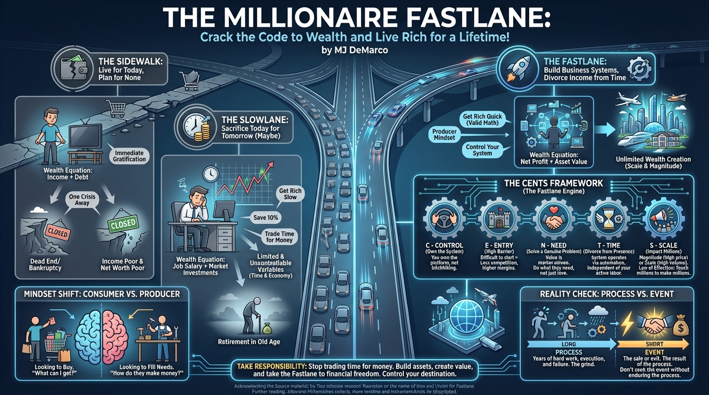

isbn-13: 9780984358106
Audible
AI Generated Content
Generated by gemini-3-pro-preview

Introduction
The Millionaire Fastlane: Crack the Code to Wealth and Live Rich for a Lifetime! by MJ DeMarco is a financial guide that challenges the traditional advice of “Get Rich Slow.” DeMarco argues that the standard societal prescription—go to school, get a good job, save 10% of your paycheck, and invest in the stock market—is a “Slowlane” roadmap that trades your most valuable asset, time, for a mediocre financial future at an old age. Instead, the book advocates for the “Fastlane,” a strategy focused on entrepreneurship and building business systems that divorce income from time. The core premise is that “Get Rich Quick” is a valid mathematical possibility, distinct from “Get Rich Easy,” and requires a fundamental shift from a consumer mindset to a producer mindset [1, 2].
Overview of the key points
The Three Roadmaps to Wealth
DeMarco categorizes financial behaviors into three distinct roadmaps, each with its own mathematical formula and destination.
- The Sidewalk: This roadmap describes people who live for today with no financial plan. Sidewalkers seek immediate gratification and spend everything they earn, regardless of their income level. They are often “income rich” but “net worth poor,” living one crisis away from bankruptcy. Their wealth equation is Income + Debt [3].
- The Slowlane: This is the path most people are taught to follow. It involves sacrificing today for a better tomorrow by relying on a job and market investments. The Slowlane wealth equation is (Job Salary) + (Market Investments). DeMarco critiques this path because its variables—your time and the stock market returns—are limited and uncontrollable. You cannot work more than 24 hours a day, and you cannot control the economy [3, 4].
- The Fastlane: This roadmap focuses on unlimited wealth creation through business systems. Fastlaners build assets that generate income independent of their time. Their wealth equation is Net Profit + Asset Value. By increasing unit profit or volume (Scale), a Fastlaner can exponentially increase their income and the asset value of their business, often leading to a massive “event” or exit [2, 3].
The CENTS Framework
To distinguish a true Fastlane business from a job in disguise, DeMarco introduces the CENTS framework. A business must meet these five commandments to have high wealth potential:
- Control: You must own and control your business system. Building on someone else’s platform (like solely relying on a third-party marketplace) violates this commandment because you are a “hitchhiker” at the mercy of the driver [2].
- Entry: The barrier to entry must be high. If anyone can start your business in a day, competition will be fierce and margins low. True opportunity lies in businesses that require process and difficulty to start [2].
- Need: Businesses must solve a genuine problem or fill a need. DeMarco advises against “doing what you love” if the market doesn’t value it; instead, “do what they need” [2, 5].
- Time: The business must be able to operate without your active presence. You must be able to divorce your time from your income through automation and systems [2].
- Scale: The business must have the potential to impact millions. Wealth is capped if your reach is limited to a local area. You need magnitude (high value) or scale (high volume) to generate significant wealth [2, 3].
The Law of Effection
DeMarco defines wealth through the “Law of Effection,” which states that to make millions, you must impact millions. Financial success is a direct reflection of the number of lives a person touches. This can be achieved by selling a low-priced product to millions of people (scale) or a high-priced product to fewer people (magnitude) [2, 3].
Overview of the key themes
Producer vs. Consumer Mindset
A central theme of the book is the necessity of switching from a consumer to a producer. Most people are conditioned to look for things to buy, but wealthy individuals look for needs to fill. DeMarco urges readers to analyze the world through a producer’s lens: instead of just buying a product, ask how the company makes money, what their business model is, and how they provide value [5].
Process vs. Event
The book emphasizes that wealth is a process, not an event. Society often celebrates the “event”—the sale of a company or a lottery win—without acknowledging the years of hard work, failure, and execution that preceded it. DeMarco warns that seeking the event without enduring the process leads to failure. Execution is described as the great divider between those who dream of wealth and those who achieve it [5].
Mathematics over “Miracles”
DeMarco heavily critiques the reliance on compound interest as a wealth-building tool for the young. He argues that compound interest is effective only with massive capital or massive time (40+ years), making it a “Slowlane” tool. Fastlaners focus on the math of business growth—increasing net profit by large percentages through execution—which instantly increases asset value, offering a far faster route to wealth than waiting for average market returns [3, 4].
Conclusion
The Millionaire Fastlane concludes with a call to take responsibility for one’s financial life. DeMarco asserts that the Slowlane is a risky gamble that relies on uncontrollable factors like the economy and the stock market. True financial freedom comes from taking control, building systems that solve genuine needs, and executing on a process that divorces income from time. The final message is to stop trading time for money and start building assets that can generate wealth independently [2, 3].
Further Reading
- Unscripted: Life, Liberty, and the Pursuit of Entrepreneurship by MJ DeMarco. This is the direct follow-up to The Millionaire Fastlane, expanding on the “script” of societal conditioning and providing a broader framework for entrepreneurship.
- The E-Myth Revisited by Michael Gerber. DeMarco emphasizes the importance of systems; this book is a classic resource on why small businesses fail and how to build a business that runs on systems rather than the owner’s constant labor.
- The 4-Hour Workweek by Tim Ferriss. This book complements the Fastlane philosophy by providing tactical advice on lifestyle design, automation, and outsourcing to achieve the Commandment of Time.
Sources
- [1] Reddit Summary: https://www.reddit.com/r/BettermentBookClub/comments/wijwur/the_millionaire_fastlane_by_mj_demarco_summary/
- [2] Dan Silvestre Summary: https://dansilvestre.com/summaries/the_millionaire_fastlane/
- [3] The Fastlane Forum: https://www.thefastlaneforum.com/community/threads/the-secret-formula-to-wealth-an-analysis-of-the-millionaire-fastlane.111908/
- [4] Jake & Gino Overview: https://jakeandgino.com/millionaire-fastlane-mj-demarco/
- [5] Terrence Lall Blog: https://terrencelall.com/2023/03/27/the-millionaire-fastlane/